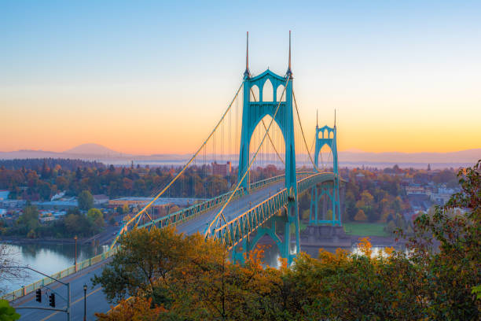
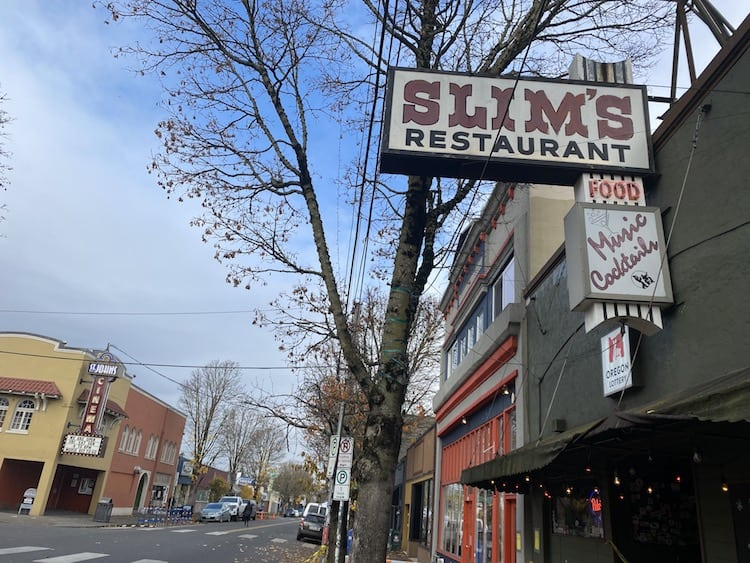
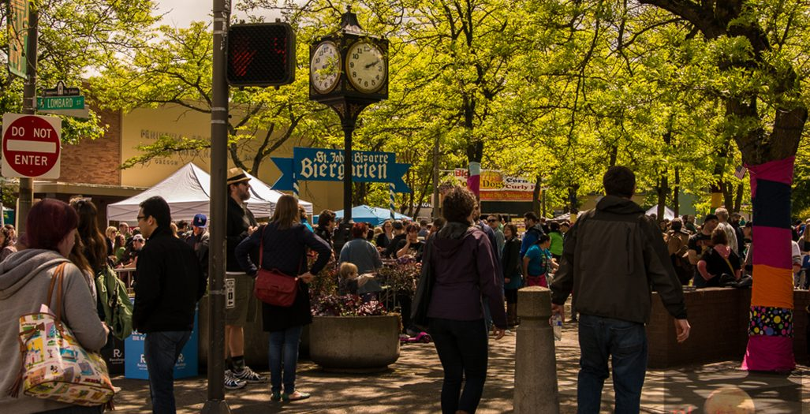

St. Johns is a neighborhood of Portland, Oregon, United States, located in North Portland on the tip of the peninsula formed by the confluence of the Willamette River and the Columbia River. The iconic St. Johns Bridge crosses the Willamette from the south, leading into downtown St. Johns. It was a separate, incorporated city from 1902 until 1915, when citizens of both St. Johns and Portland voted to approve its annexation to Portland, which took effect on July 8, 1915.
St. Johns is bordered by the Columbia River to the northeast, the Willamette River to the northwest, the North Portland railroad cut to the southeast, and a number of streets separating it from Cathedral Park to the southwest, primarily North Ivanhoe Street.
Source: Wikipedia Article
The St. Johns bridge, crossing the Willamette river from Portland's Forest Park on the west side.
Slim's Restaurant and Twin Cinema's St. Johns theatre are two popular, local staples located on Lombard street in downtown St Johns.
The St. Johns Bizarre is an annual festival in May, featuring a parade, live music and stands by local craft artisans
Promo by Travel Portland
Have any questions, comments or tips? - Please don't hesitate to fill out the form below and let us know!